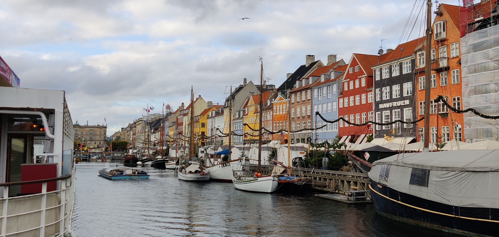
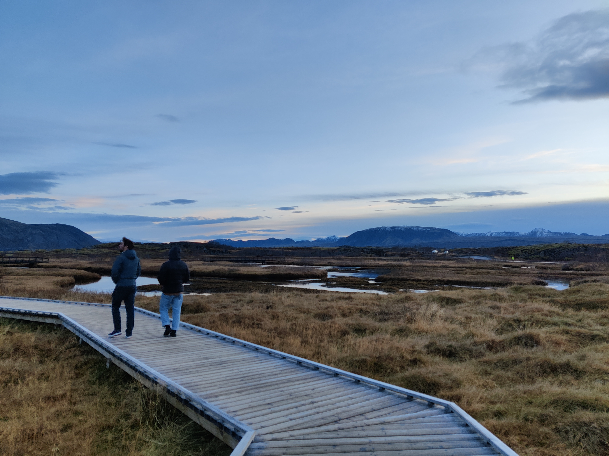
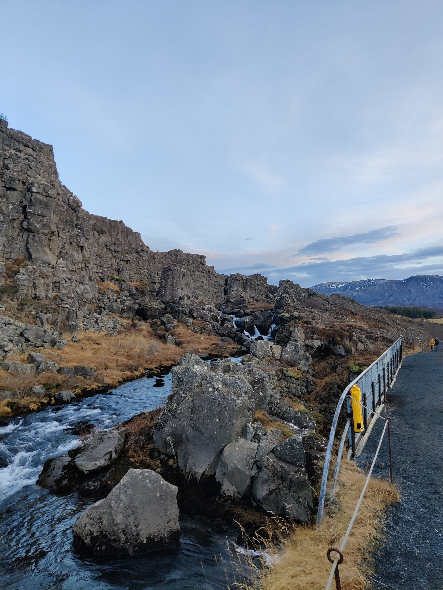
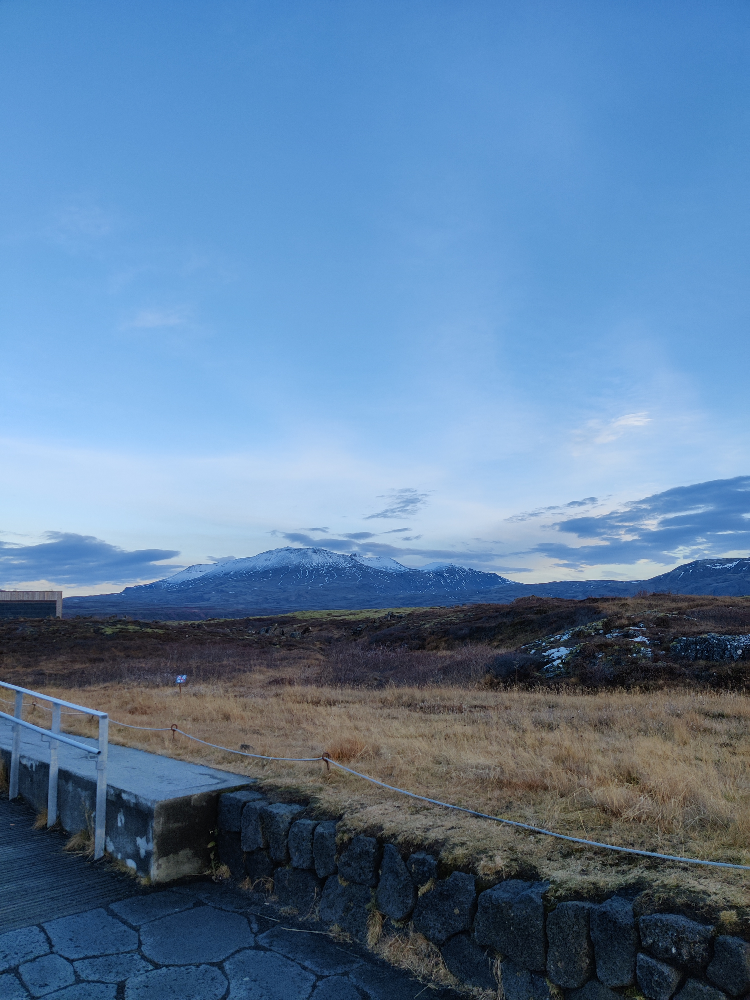
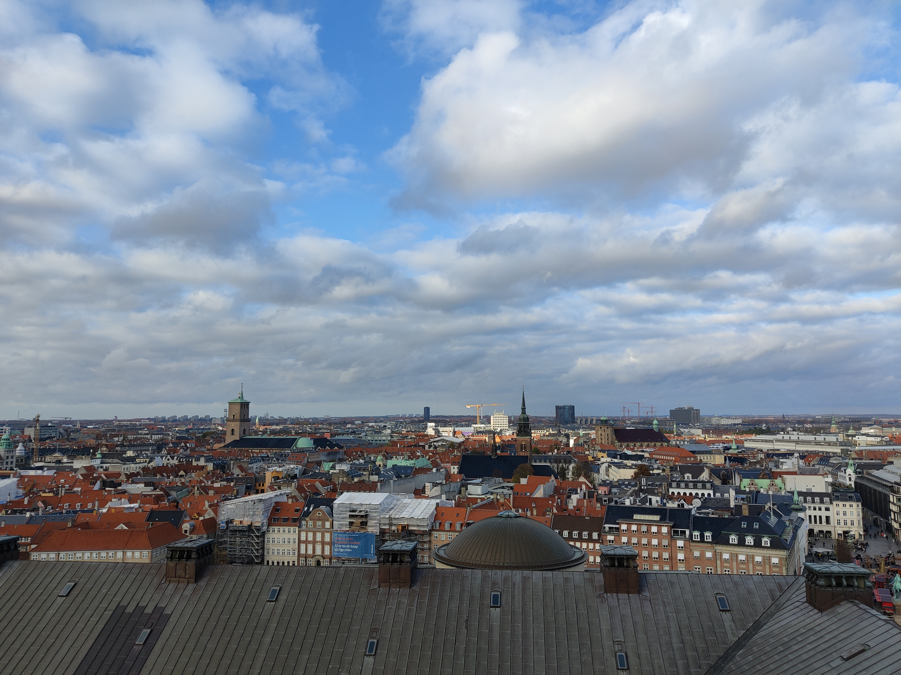
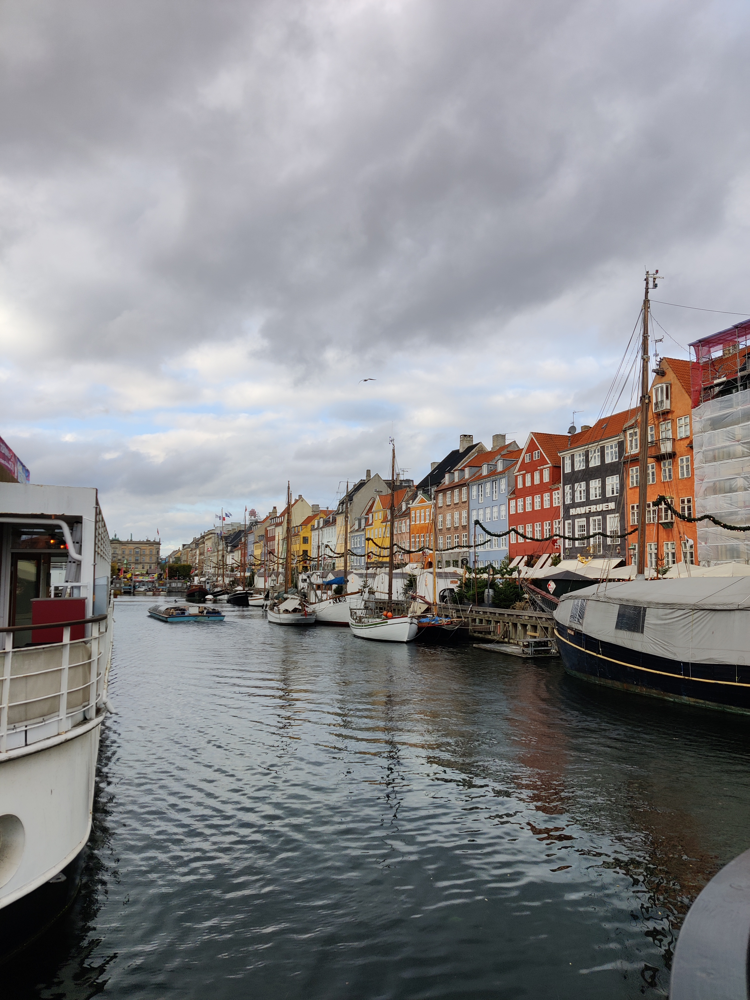
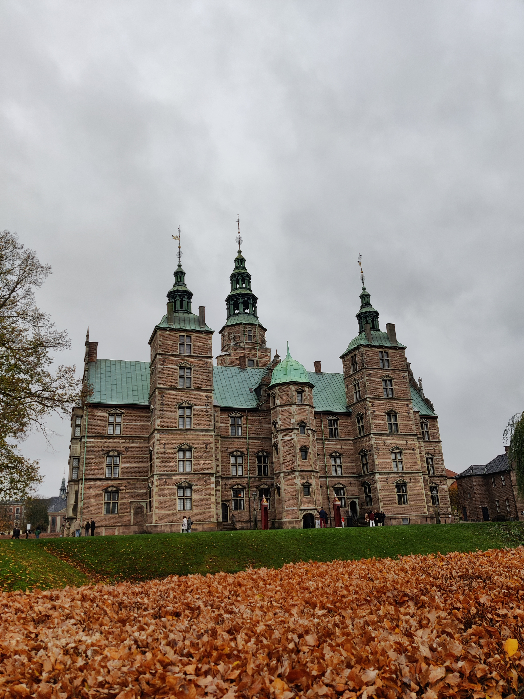
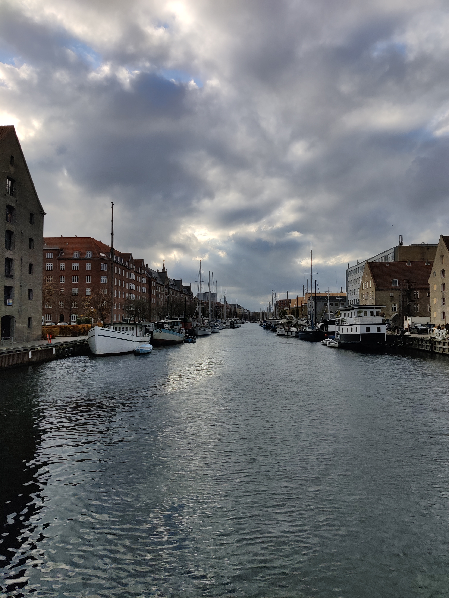
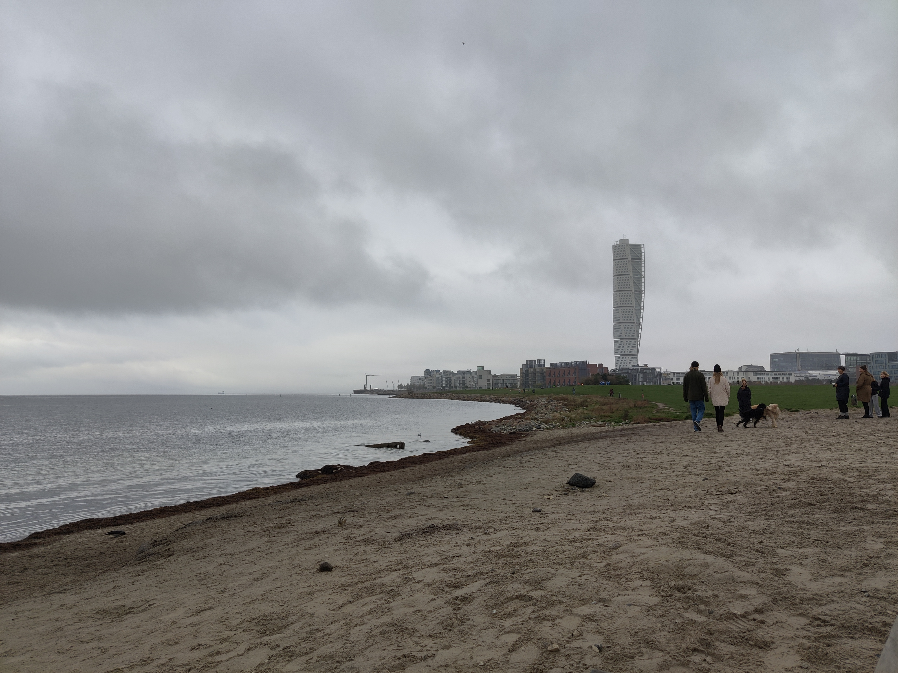
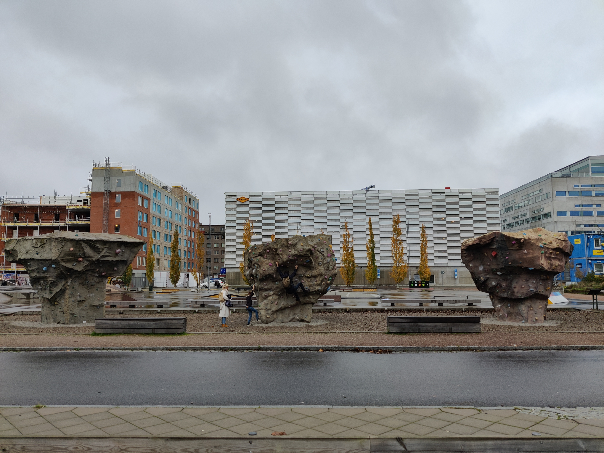

Nyhavn Harbor
Last November, I took a trip to Copenhagen for a week with a couple buddies. One of the highlights of the trip was actually a nine hour layover in Iceland on the way there. Once in Copenhagen, we also spent a day in Malmö, Sweden since it was less than an hour away by train. Below are some of my favorite photos I took along the way::
Kerid Crater

Þingvellir National Park

Þingvellir National Park

Þingvellir National Park

Christiansborg Palace

Nyhavn Harbor

Rosenborg Castle

Christianshavns Kanal

Ribersborgsstranden

Outdoor Bouldering

Larochegatan Street